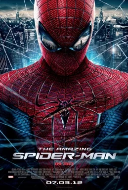
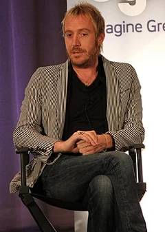
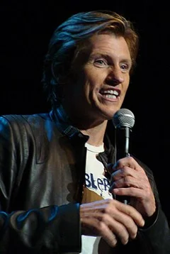
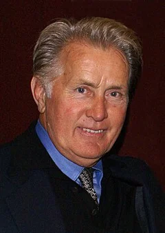

The Amazing Spider-Man (2012)
| Movie | Release Date | Poster |
|---|---|---|
| The Amazing Spider-Man PG-13 · 2h 16m · action · thriller · teen |  |
| Trailer |
|---|
| Rotten Tomatoes | Metacritic | IMDb |
|---|---|---|
| 71% | 66/100 | View on IMDb |
| Overview |
|---|
The Amazing Spider-Man is a 2012 American superhero film based on the Marvel Comics character Spider-Man. Directed by Marc Webb and written by James Vanderbilt, Alvin Sargent, and Steve Kloves from a story by Vanderbilt, it is a reboot of the Spider-Man film series. It stars Andrew Garfield, Emma Stone, Rhys Ifans, Denis Leary, Campbell Scott, Irrfan Khan, Martin Sheen, and Sally Field. The plot of the film follows the teenager Peter Parker (Garfield) who gains spider-like abilities and fights crime as Spider-Man, while also attempting to live an ordinary life. Full plot (spoilers)After discovering that his home office has been burglarized, scientist Richard Parker and his wife Mary flee to an unknown destination, leaving their young son Peter in the care of his Aunt May and Uncle Ben . Years later, a teenage Peter attends Midtown Science High School in New York City. He is intelligent, but socially awkward and often bullied. He has a crush on Gwen Stacy , who returns his feelings. Peter discovers his father's briefcase and learns from Ben that his father was a friend of Dr. Curt Connors , a scientist at Oscorp in the field of cross-species genetics . Hoping to learn about his father's work, Peter sneaks into a restricted laboratory at Oscorp, where a genetically modified spider bites him. He develops spider-like abilities, including superhuman strength, agility, speed, and the ability to cling to surfaces. Connors, whose right arm has been amputated, is conducting experiments to regenerate limbs. Peter discovers the missing piece to Connors' research, the "decay rate algorithm", in his father's papers. Peter visits Connors, reveals that he is Richard's son, and gives Connors the algorithm. At home, Peter and Ben argue, and Peter leaves. While searching for Peter, Ben is killed by a thief. Under the alias Spider-Man, Peter uses his new abilities to track down criminals matching the killer's description. He creates a mask with yellow-tinted glasses and a spandex suit to hide his identity, and builds mechanical web-shooters using a web formula developed by Oscorp. At dinner with Gwen's family, he discovers her father is police captain George Stacy , who holds a grudge against Spider-Man. After arguing with Captain Stacy, Peter reveals his double identity to Gwen, and they kiss. Connors' superior, Rajit Ratha, demands that Connors begin human trials with his formula to regrow limbs using lizard DNA. Connors refuses to rush into testing, as it could put innocent people at risk. Ratha fires Connors and decides to test the serum at a Veterans Administration hospital. Desperate, Connors tries the formula on himself, passes out, and awakens to find that his missing arm has regenerated. While trying to intercept Ratha on the Williamsburg Bridge , Connors turns into a humanoid reptilian monster and begins a violent rampage; Peter arrives and saves people from Connors' attacks. Unable to piece together a narrative for the incident, the police issue a city-wide manhunt for both the Lizard and Spider-Man. Connors discovers that Peter is Spider-Man and attacks him at school. Peter pursues Connors into the underground sewer system, where he finds a makeshift lab. He realizes that Connors is planning to release a biochemical agent from Oscorp Tower, which will turn everyone in the city into reptilian hybrids like himself. As Peter tries to stop Connors, the police corner him, and Captain Stacy discovers his double identity. Stacy lets Peter go after Connors, while Gwen creates an antidote for Connors' chemical agent. While Stacy occupies Connors in battle, Peter disperses the antidote into the city, curing Connors and his victims. Dying from wounds inflicted by Connors, Stacy asks Peter to stay away from Gwen to keep her safe. Peter tries to honor this request, but realizes both he and Gwen are unhappy, and he hints to her that he may not keep his promise. |
| Actor | Character | Photo |
|---|---|---|
| Andrew Garfield | Peter Parker / Spider-Man A highly intelligent and introverted teenager who develops spider-like abilities after being bitten by a genetically-modified spider. | No photo |
| Emma Stone | Gwen Stacy Peter's high school classmate and his love interest. | No photo |
| Rhys Ifans | Dr. Curt Connors / Lizard A leading scientist at Oscorp who attempts to engineer a serum to regrow human limbs. |  |
| Denis Leary | George Stacy A police captain and Gwen's father. |  |
| Campbell Scott | Richard Parker Peter's father. |  |
| Irrfan Khan | Rajit Ratha An Oscorp executive and Connors' immediate superior. | |
| Martin Sheen | Ben Parker Peter's uncle and Richard's brother. |  |
| Sally Field | May Parker Ben's wife and Peter's aunt. |  |
| Embeth Davidtz | Mary Parker Peter's mother. | |
| Chris Zylka | Flash Thompson A bully at Peter's school. | |
| Annie Parisse | – | No photo |
| C. Thomas Howell | – | No photo |
| Michael Massee | – | No photo |
| Stan Lee | – | No photo |
| Amber Stevens West | – | No photo |
| Barbara Eve Harris | – | No photo |
| Kelsey Asbille | Bluebird | No photo |
| Tia Texada | – | No photo |
| Kari Coleman | – | No photo |
| Skyler Gisondo | – | No photo |
| Jill Flint | – | No photo |
| Michael Papajohn | – | No photo |
| Jennifer Lyons | – | No photo |
| Charlie DePew | – | No photo |
| Andy Pessoa | – | No photo |
| Ethan Cohn | – | No photo |
| Detail | Value |
|---|---|
| Directed by | Marc Webb |
| Written by | James Vanderbilt, Alvin Sargent, Steve Kloves, Stan Lee, Steve Ditko |
| Produced by | Avi Arad, Stan Lee, Laura Ziskin |
| Music by | James Horner |
| Cinematography | John Schwartzman |
| Edited by | Michael McCusker, Pietro Scalia |
| Production companies | Columbia Pictures, Marvel Entertainment |
| Distributed by | Columbia Pictures, InterCom, Netflix |
| Running time | 136 minutes |
| MPAA rating | PG-13 |
| Budget | $230 million |
| Box office | $758 million |
Overview, plot, and cast descriptions are from Wikipedia (CC BY-SA 4.0). Credits, ratings, and box office are from Wikidata.